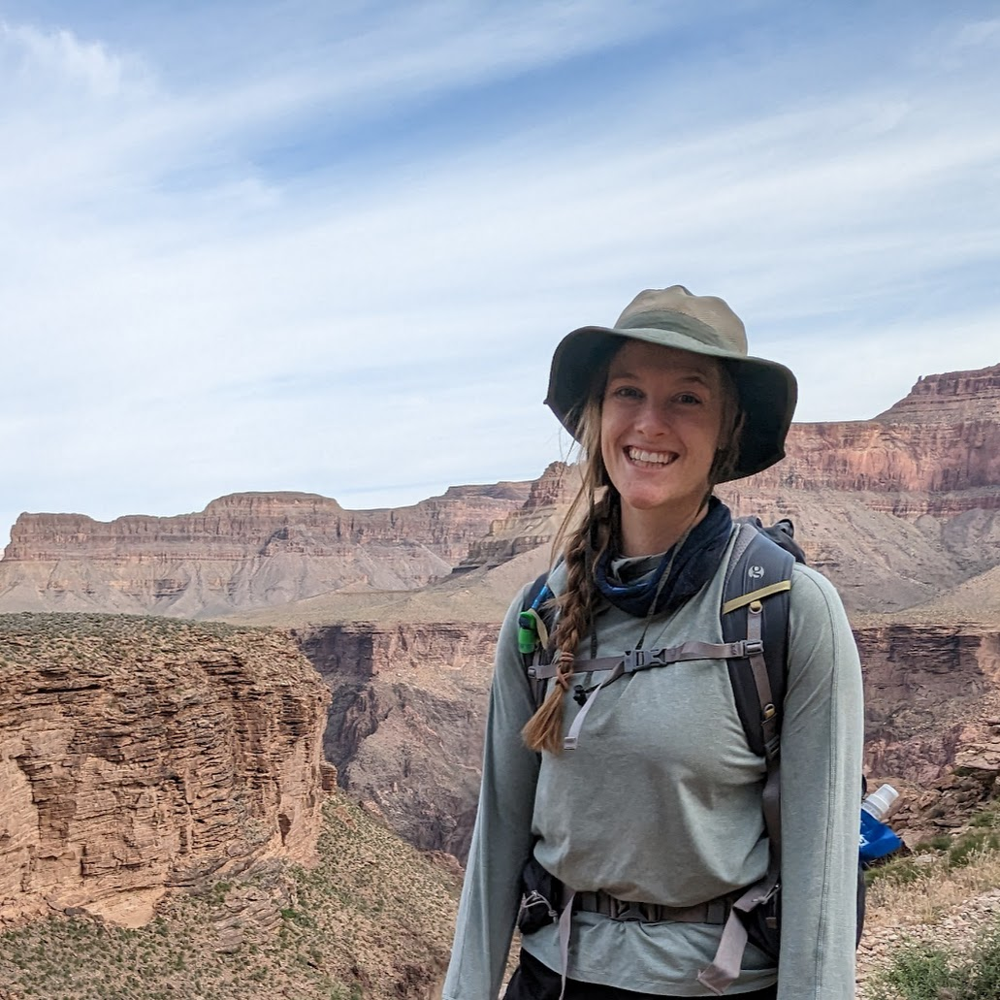

Blair Mirka
Ph.D. Candidate
Welcome to my Website! I am a 6th-year Ph.D. student specializing in GIS, Remote Sensing, Computer Vision and Digital Museum Studies at the University of New Mexico. Take a load off and stay awhile!
Welcome to my Website! I am a 6th-year Ph.D. student specializing in GIS, Remote Sensing, Computer Vision and Digital Museum Studies at the University of New Mexico. Take a load off and stay awhile!